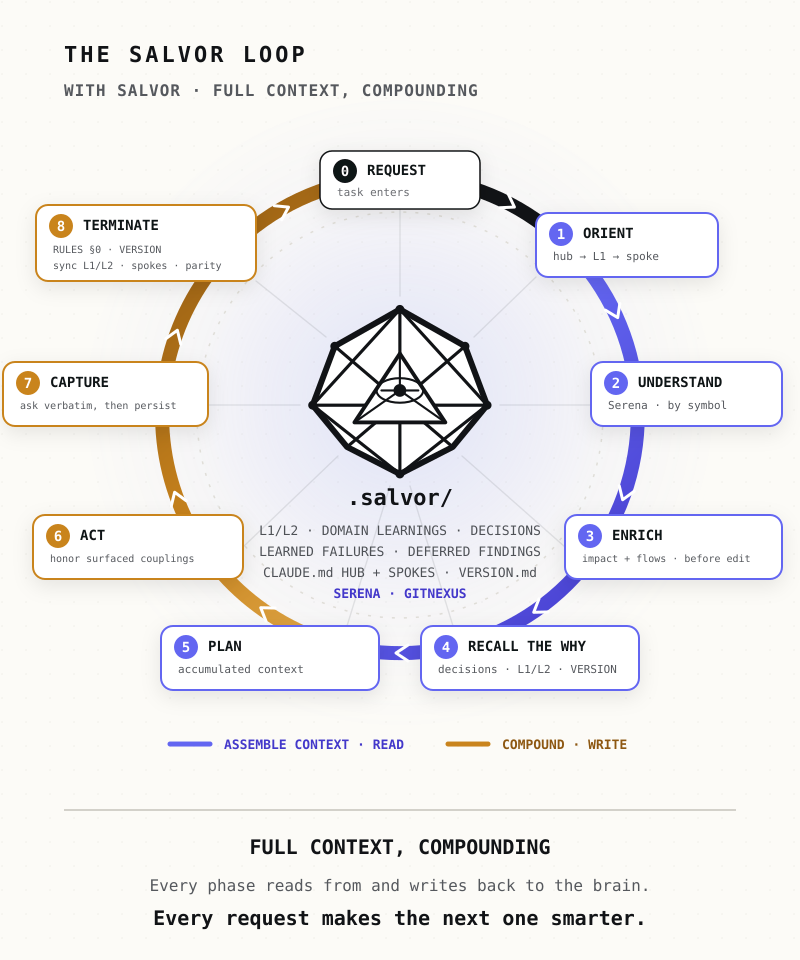
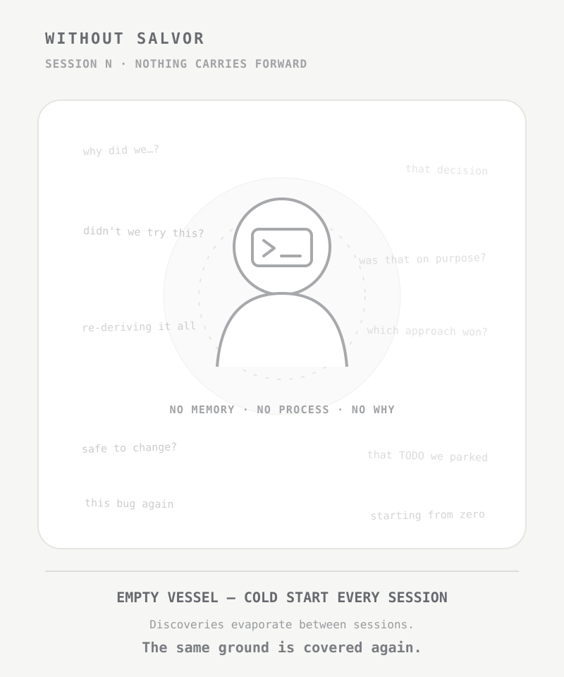

1
The repo remembers why.
Preserves decisions, learned failures, domain knowledge, and deferred findings — with the reasoning behind them.
> SALVOR v1.0.0-beta
Your repo remembers.
// THREE REASONS
Preserves decisions, learned failures, domain knowledge, and deferred findings — with the reasoning behind them.
A shared, version-controlled brain across sessions, teammates, and even different vendors.
No hosted service, no account, and no vendor-owned shared brain. Repository Markdown stays canonical while compatible thin adapters let you switch supported agents without migrating your memory.
// HOW SALVOR WORKS
CLAUDE.md is the canonical hub; component spokes keep context focused, while thin adapters route supported agents to the same shared brain.
L1 is a concise current-state cache. L2 preserves deep reasoning and recovery history.
User-gated Continued Learning: Decision / Domain Learning · Learned Failure · Deferred Finding.
The shared brain is repo-owned Markdown. Compatible thin adapters let you switch supported vendors without migrating memory.
RULES.md keeps reviewed memory and component context synchronized. Optional Strict defaults can also enforce project-specific version counters and parity rules.
Optional, highly recommended code intelligence: navigate by symbol and analyze impact before editing.
.salvor/ is the namespaced brain: L1/L2 state, DOMAIN_REF.md, infrastructure, deferred findings (DEFERRED_TODOS.md), postmortems, .salvor/domain-learnings/, and .salvor/decisions/ for durable design rationale.
Every capture class is user-gated — durable saves need your explicit approval. For a finding, the agent asks: Save this as a domain learning? (yes/no)
// THE SALVOR LOOP
The shared brain supplies context before the work, then receives user-approved knowledge and rationale after it — so a fresh session starts from reviewed knowledge instead of reconstruction.


.salvor/
├── active_state.md
├── active_state_verbose.md
├── DOMAIN_REF.md
├── INFRA.md
├── DEFERRED_TODOS.md
├── decisions/
├── domain-learnings/
└── postmortems/
This is what the brain looks like after real work — every file reviewed in Git.
View a populated example
// USE SALVOR
PRIMARY PATH
Vendor-agnostic and vendor-portable out of the box: CLAUDE.md is the canonical hub, with thin AGENTS.md and GEMINI.md entrypoints generated by default. Claude Code, Codex, and GEMINI.md-compatible clients get generated entrypoints; other agents can route to the same repository-owned brain through compatible thin adapters.
SETUP_PROMPT.md and answer the four setup questions.Core works with repository files alone. Serena + GitNexus are optional Enhanced integrations, but both are highly recommended for the best code-grounded results. Setup doesn't fail without them.
$ cat SETUP_PROMPT.md
$ # copy the output; paste into your CLI
$ # answer the setup questions
$ # Salvor scaffolds the restACTIVE DEVELOPMENT · SHIPS WITH v1.1.0
The Claude Code plugin is in active development, ships with v1.1.0. It is not part of the v1.0.0-beta release; the universal prompt above is the supported path today.
The future plugin is a convenience wrapper over the same canonical prompt and shared files, never a replacement for the vendor-portable foundation.
Codex and Gemini plugin equivalents are open for contributors.
Plugin roadmap →// CODE INTELLIGENCE INTEGRATIONS
Salvor's core runs on repository files alone. Serena and GitNexus are optional Enhanced code-intelligence integrations, but both are highly recommended for the best code-grounded results — each under its own license and terms.
Optional open-source integration for semantic code navigation and targeted edits by symbol. Highly recommended for the best results: understand before you change.
github.com/oraios/serena →Optional, highly recommended integration providing a code knowledge graph — see what breaks before you ship. A third-party project under the PolyForm Noncommercial license; review its terms for your use.
github.com/abhigyanpatwari/GitNexus →Salvage your knowledge before it's lost to the next session.